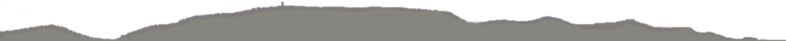

Nos derniers rapports annuels: 2025 | 2024 | 2023 | (1999-2022)
Nos randonnées sont gratuites, mais nous avons quand-même quelques dépenses. Vos cotisations et dons en couvrent une partie, et par le passé la Ville de Genève a bien voulu nous soutenir pour équilibrer le budget.
Vous voulez faire partie de la base de l'AGAS et participer aux décisions lors de l'assemblée générale? Merci d'envoyer vos coordonnées (nom, prénom, email, téléphone, adresse postale) à agas@saleve.xyz, et de virer votre cotisation de 15 CHF pour l'année en cours sur le compte de l'AGAS (QR code ci-dessous).
Vous voulez juste nous soutenir, sans pour autant faire partie d'un club? Faites-nous un don de n'importe quel montant. Même le prix d'un café sera apprécié!
L'AGAS est une association d'utilité publique. Vous pourrez donc déduire votre don dans votre déclaration fiscale.
Pour tout don d'au moins 20 CHF, nous vous enverrons automatiquement une attestation de don après la fin de l'année.
IBAN : CH29 0840 1000 0724 9226 0
Bénéficiaire : Association genevoise des amis du Salève (AGAS), 1202 Genève
QR code pour paiement e-banking:

L'AGAS remercie la Ville de Genève pour son soutien. Et un grand merci aussi à nos membres et nos donneurs. C'est grâce à vous que l'AGAS a ses propres ressources, et peut ainsi demander un subside pour les compléter. Voici où nous en sommes: